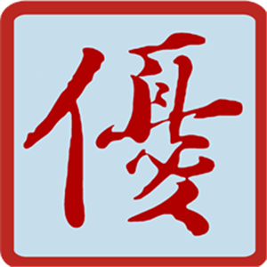

 广州优标教育科技有限公司
公司简介
广州优标教育科技有限公司，成立于二零壹肆年。公司坐落在广州市白云区嘉禾八一科技园。是一家集专业研发、生产汽车电子电工电控教学设备，新能源汽车培训为一体的创新型民营高科技软件企业。
公司产品主要有：新能源纯电动汽车系统教具；汽车电子电工实训平台、汽车电控电喷系统仿真实训系统、汽车电控部件联网实训系统、汽车发动机实训设备、汽车自动变速器实训设备、汽车车身电子实训设备、汽车整车理实一体化教学实训系统等。“立足教育、服务教育”是公司的一贯坚持的宗旨、我们以优质的产品、优质的服务、完善的售后，为全国高校、高职、中职汽车院校提供完整的汽修实训基地建设方案和教学所需仪器设备。
广州优标教育科技有限公司办公室地址位于中国的南大门羊城广州，广州 广州市白云区友谊路八一科技园B栋四楼（邮编：510405），于2014-09-05 在广州工商局注册成立，注册资本为300万（万元），公司已经公司发展壮大的5年，愿与社会各界同仁携手合作，谋求共同发展，继续为新老客户提供优秀的产品和服务。我公司主要经营计算机应用电子设备制造;电子元件及组件制造;印制电路板制造;其他通信设备专业修理;电气设备修理;信息电子技术服务;科技信息咨询服务;教学设备的研究开发;多媒体设计服务;电子产品设计服务;商品信息咨询服务;技术进出口;汽车维修工具设计服务;...(依法须经批准的项目，经相关部门批准后方可开展经营活动)，在职员工有50人，，我公司与多家广州零售商和代理商建立了长期稳定的合作关系，品种齐全、价格合理，企业实力雄厚，重信用、守合同、保证产品质量，以多品种经营特色和薄利多销的原则，赢得了广大客户的信任，公司始终奉行“诚信求实、致力服务、唯求满意”的企业宗旨，全力跟随客户需求，不断进行产品创新和服务改进。 公司，联系电话为+86-18027320899，期待您的来电咨询!